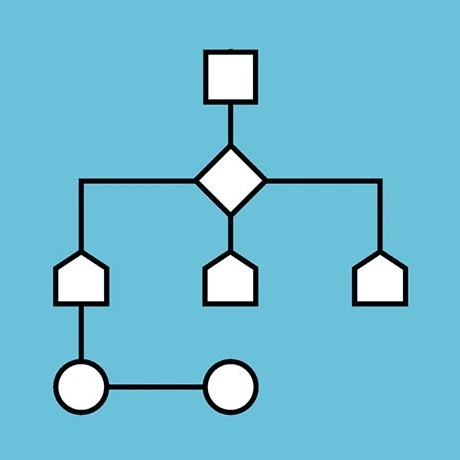
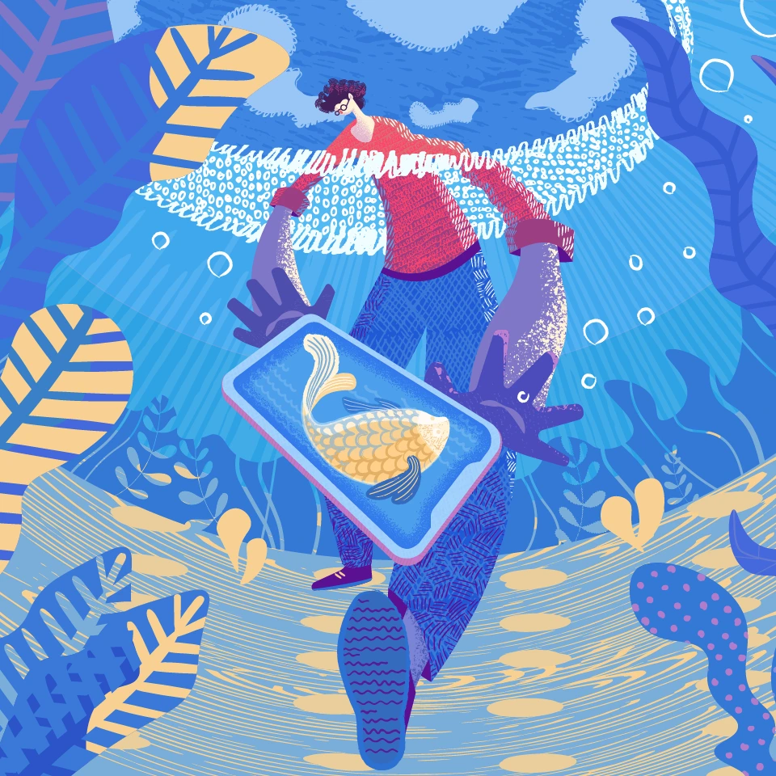

John Vincent M. Corcega
John, Vincent, Vince
🔭 Hobbies
- 🖥️ Programming
- 🎧 Listening to music
- 📔 Reading
🌠 Childhood Dream
I initially wanted to become an 👓 opthalmologist.
💻 Favorite CMSC Subject So Far

So far, I have enjoyed 📈 CMSC 123. It's very interesting to see how algorithms work and how one can make them very efficient. It's kinda difficult but I have enjoyed taking it nonetheless.
📖 Favorite GE Subject So Far
